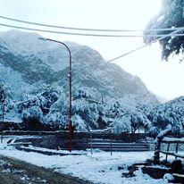
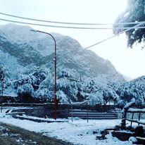

Bienvenidos a Tatón, Catamarca
Descubre la magia y serenidad de Tatón, un destino único en el corazón de la provincia de Catamarca. Conocido por sus impresionantes dunas de arena, las más altas de Sudamérica, y la sagrada Capilla del Señor de la Agonía, Tatón ofrece una mezcla perfecta de naturaleza y espiritualidad. Disfruta de aventuras en el desierto, donde podrás practicar sandboard y recorrer las dunas en emocionantes paseos en 4x4. Para aquellos que buscan una experiencia más tranquila, la capilla es un refugio de paz y devoción, atrae a peregrinos y visitantes de todo el mundo. Explora este rincón fascinante y vive una experiencia inolvidable en Tatón. ¡Te esperamos con los brazos abiertos!.
Lugares para visitar

Dunas de Taton
Este impresionante paisaje desértico es conocido por sus altas dunas de arena, algunas de las más altas de América del Sur. Ubicación: Las dunas están ubicadas cerca del pueblo de Tatón, en el departamento de Tinogasta, a unos 280 kilómetros de la capital provincial, San Fernando del Valle de Catamarca.
Para llegar a las Dunas de Tatón, se puede tomar la ruta provincial 34 desde Fiambalá, pasando por las localidades de Saujil y Medanitos, y luego seguir unos 30 kilómetros hasta Tatón

El Señor de la Agonía
El Señor de la Agonía es una imagen religiosa venerada en la capilla de La Puerta de Tatón, ubicada en el departamento de Tinogasta, Catamarca. Según la leyenda, en enero de 1946, un joven llamado Rosa Bautista Morales tuvo una aparición del Señor de la Agonía mientras descansaba junto al río Abaucán Medanitos. El fue instruido por la imagen para construir una capilla en ese lugar, lo que llevó a la creación de un importante sitio de peregrinación en la región.
Para llegar a la Capilla del Señor de la Agonía en Tatón, Catamarca, toma la Ruta Provincial 34 desde Fiambalá hasta Medanitos, luego continúa por un camino de tierra durante unos 30 km hasta La Puerta de Tatón, donde se encuentra la capilla.
Eventos


FESTIVAL DEL DURAZNO
Cada año, la encantadora localidad de Tatón celebra el Festival del Durazno, uno de los eventos más antiguos y emblemáticos del distrito de Fiambalá. Este festival, que se lleva a cabo en febrero, reúne a la comunidad para disfrutar de una noche llena de música, danzas folklóricas, comidas típicas y una gran fiesta criolla. Es una oportunidad única para experimentar la cultura y tradiciones de la región, mientras te sumerges en un ambiente festivo y acogedor.


PACHAMAMA
El Encuentro para Honrar y Celebrar a la Pachamama en Tatón, Catamarca, es un evento anual que se celebra el primer domingo de agosto. Este evento tiene como objetivo recuperar y revalorizar la costumbre ancestral de honrar a la Madre Tierra, conocida como Pachamama2. La ceremonia incluye ofrendas, danzas tradicionales, música y una gran participación de la comunidad local. Durante el evento, los participantes realizan ofrendas a la Pachamama, que pueden incluir alimentos, bebidas y otros elementos simbólicos. Las danzas y la música tradicional son una parte esencial de la celebración, creando un ambiente festivo y cultural2. La comunidad local, incluyendo niños y adultos, participa activamente, destacando la importancia de mantener vivas estas tradiciones ancestrales.
Galería de Taton
 
